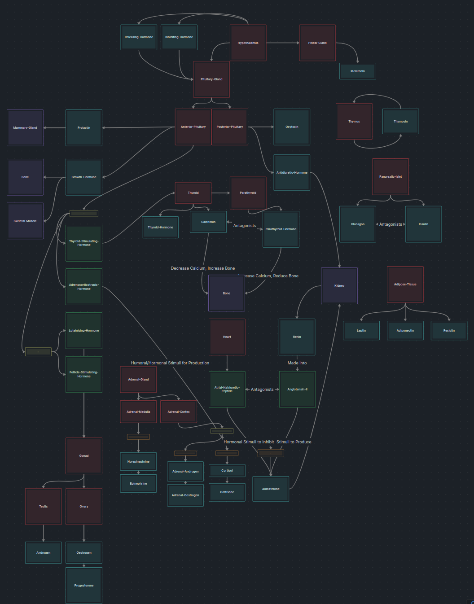
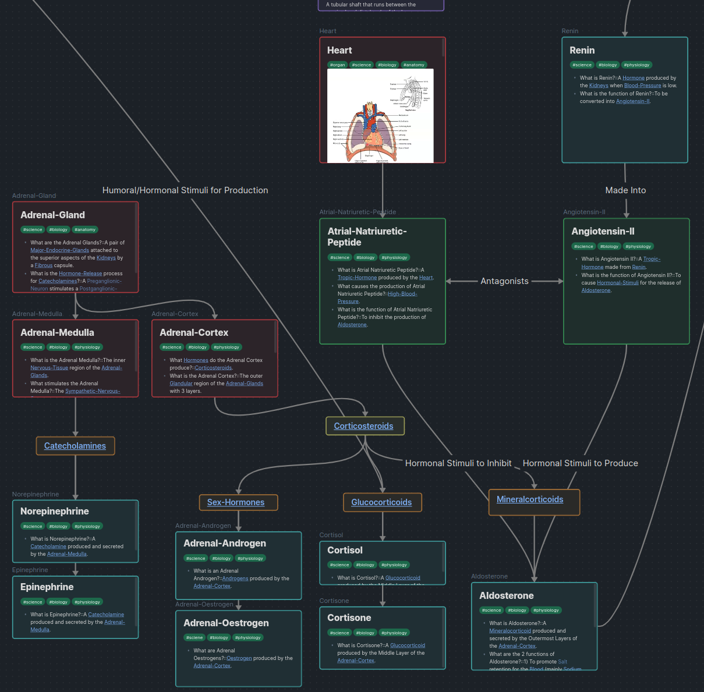
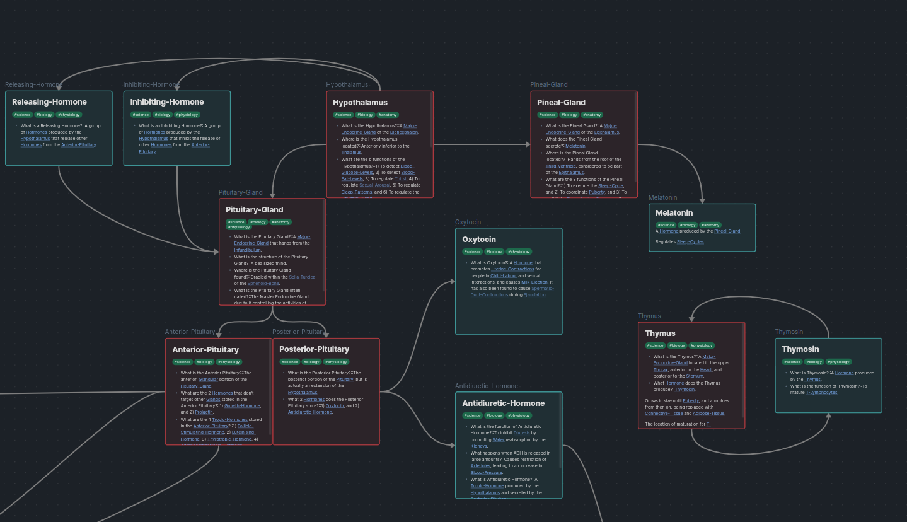
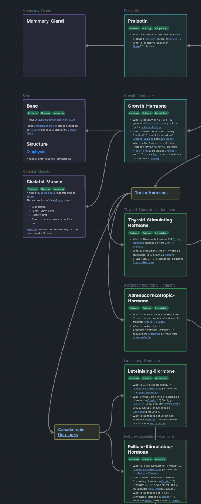
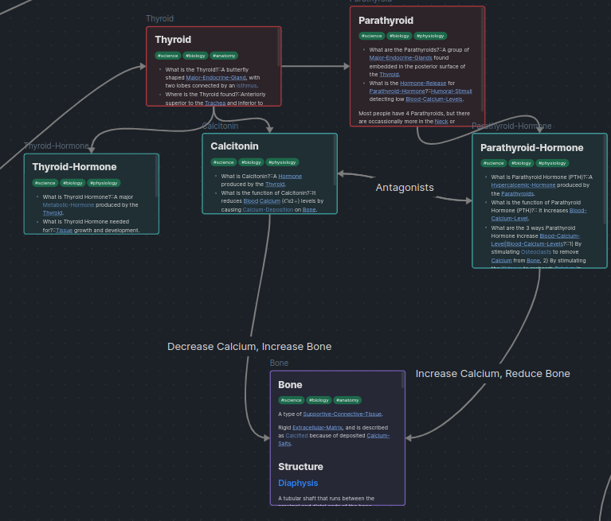

AH
AH
ok
So, I would love to touch on this in my Week 4 Update, but, I really want to get this out of my system now because my brain is just filled to the brim with stuff on the Endocrine System.
So, here’s the Endocrine System.
An organ system that is responsible for chemical signalling within the body through the secretion of hormones.
Chemical signals to communicate with Organs of the body, including other Endocrine Organs.
Well, here’s where the core difference between the two systems come to light:
This key difference is why the Endocrine System has quite a lot to do with regulating Homeostasis, because it can impact more gradual changes in the body (such as Blood Glucose Levels, Blood Fat Levels, and Blood Water Levels (Osmolality)) in a ??
Am I going to get into the entire flow of the Endocrine System in this blog post? Absolutely not. BUT, I did spend a long time creating a canvas page using Obsidian so I can better visualise the flow of Hormones throughout the body. So, voila!





Did you just make this blog post so you could post your endocrine diagram online to show off?
… Maybe a little bit.
COME ON it looks good!
I like it, and I’m proud of it :D
Look, it’s low fidelity, and quite frankly I need to get back to studying soon. So, I’m gonna leave this here.